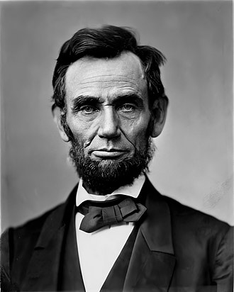

Abraham Lincoln (/ˈlɪŋkən/;[2] February 12, 1809 – April 15, 1865) was an American statesman and lawyer who served as the 16th president of the United States (1861–1865). Lincoln led the nation through its greatest moral, constitutional, and political crisis in the American Civil War. He preserved the Union, abolished slavery, strengthened the federal government, and modernized the U.S. economy.
Lincoln was born in poverty in a log cabin and was raised on the frontier primarily in Indiana. He was self-educated and became a lawyer, Whig Party leader, Illinois state legislator, and U.S. Congressman from Illinois. In 1849 he returned to his law practice but became vexed by the opening of additional lands to slavery as a result of the Kansas–Nebraska Act. He reentered politics in 1854, becoming a leader in the new Republican Party, and he reached a national audience in the 1858 debates against Stephen Douglas. Lincoln ran for President in 1860, sweeping the North in victory. Pro-slavery elements in the South equated his success with the North's rejection of their right to practice slavery, and southern states began seceding from the union. To secure its independence, the new Confederate States of America fired on Fort Sumter, a U.S. fort in the South, and Lincoln called up forces to suppress the rebellion and restore the Union.